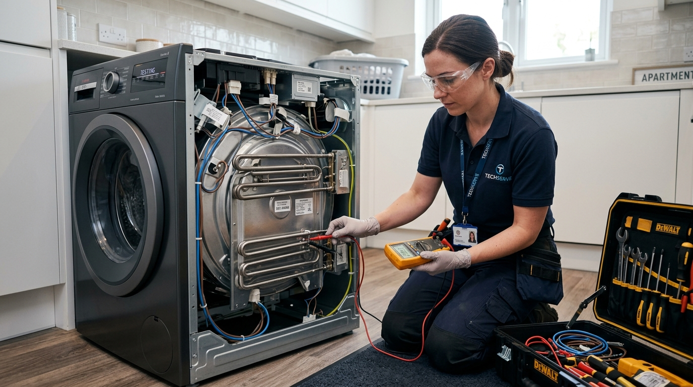

AEG markası, üstün Alman teknolojisi, yüksek enerji tasarrufu ve modern tasarımları ile evlerimizin vazgeçilmez bir parçasıdır. Ancak her elektronik ve mekanik cihazda olduğu gibi AEG ürünlerinde de zamanla aşınma, teknik arıza veya bakım ihtiyacı ortaya çıkabilir.
Böyle anlarda cihazlarınızı riske atmadan profesyonel bir yardım almanız büyük önem taşır. Tarsus Aeg Servisi kulvarında yılların kazandırdığı tecrübe ile öne çıkan Sertler Soğutma, arızalanan tüm AEG cihazlarınıza hızlı, kalıcı ve kesintisiz çözümler sunmaktadır.
Evlerinizde günlük hayatı kolaylaştıran bu değerli eşyaların işlevini yitirmesi yaşam kalitenizi doğrudan etkiler. Buzdolabının soğutmaması, çamaşır makinesinin su boşaltmaması ya da bulaşık makinesinin yıkamayı yarıda kesmesi gibi durumlar acil müdahale gerektirir.
İşte tam bu noktada Sertler Soğutma, uzman kadrosu ve modern teknik ekipmanlarıyla devreye girer. Tarsus Aeg Servisi ihtiyacınızda hızlı mobil ekiplerimiz sayesinde aynı gün içerisinde adresinize ulaşıyor ve probleminizi kökten çözüyoruz.
Alman mühendisliğine sahip AEG ürünleri, hassas elektronik kartlara ve gelişmiş motor teknolojilerine sahiptir. Bu nedenle standart tamir yöntemleri bu cihazlarda yetersiz kalabilir veya cihazınıza daha büyük zararlar verebilir.
Sertler Soğutma uzmanları, AEG marka cihazların tüm serilerine ve teknik şemalarına hakimdir. Tarsus Aeg Servisi alanında uzmanlaşmış teknisyenlerimiz, arızanın kaynağını noktasal olarak tespit ederek doğru tamir metodunu uygular.
Müşteri memnuniyetini her zaman ilk sırada tutan Sertler Soğutma, Tarsus ve çevresinde güvenin simgesi haline gelmiştir. Cihazlarınızın performansını ilk günkü seviyesine getirmek için kesintisiz teknik destek sunuyoruz.
Tarsus Aeg Servisi arayışınızda kaliteli hizmet, orijinal yedek parça ve şeffaf süreç garantisi almak istiyorsanız Sertler Soğutma ekibimiz her an hizmetinizdedir.
Tarsus Aeg Servisi ile Güvenilir Tamir ve Bakım
AEG beyaz eşyaların tamiri ve periyodik bakımı, sıradan bir teknik servis anlayışıyla gerçekleştirilemez. Cihazların iç yapısında yer alan özel sensörler ve hassas parçalar uzmanlık ister. Tarsus Aeg Servisi olarak sunduğumuz güvenilir tamir ve bakım hizmetleri, eşyalarınızın kullanım ömrünü uzatmayı hedefler. Sertler Soğutma, tamir işlemlerinde her zaman uluslararası kalite standartlarına uygun hareket eder.
Güvenilir bir teknik servis süreci, ilk iletişim anından tamir sonrası desteğe kadar her aşamada şeffaflık gerektirir. Sertler Soğutma bünyesindeki teknik personellerimiz, arıza tespiti sonrasında yapılması gereken tüm işlemleri detaylıca tarafınıza aktarır. Tarsus Aeg Servisi hizmetlerimizde onayınız alınmadan hiçbir işlem başlatılmaz ve sürpriz durumlarla karşılaşmazsınız.
Düzenli bakım yapılmayan AEG beyaz eşyalar, performans kaybına uğrayarak yüksek elektrik ve su tüketimine neden olur. Tarsus Aeg Servisi kapsamında sunduğumuz bakımlarda:
- Cihazın genel iç ve dış temizliği detaylıca yapılır.
- Elektrik bağlantıları ve voltaj dengeleri ölçülür.
- Su giriş ve tahliye hortumları kontrol edilir.
- Mekanik hareketli parçalar yağlanır ve test edilir.
- Sensör ve elektronik kart güncellemeleri gözden geçirilir.
Sertler Soğutma, güvenilirlik ilkesini tüm servis aşamalarında titizlikle uygular. Tarsus Aeg Servisi ekibimiz, yapılan her müdahalenin ardından cihazınızı performans testine tabi tutar. Cihazın tam anlamıyla stabil çalıştığından emin olmadan teslimat gerçekleştirilmez. Bu yaklaşım, arızaların tekrarlanma riskini en aza indirir.
Tarsus halkının beyaz eşya tamirinde ilk tercihi olan Sertler Soğutma, AEG ürünleriniz için en doğru bakım rehberliğini sunar. Arızaların büyümesini önlemek ve cihazlarınızı güvenle kullanmak için Tarsus Aeg Servisi uzmanlığımıza güvenebilirsiniz.
Sertler Soğutma Kalitesiyle AEG Cihaz Onarımı
AEG ürün gamında yer alan her cihaz, farklı bir teknolojiyi ve mekanik yapıyı temsil eder. Sertler Soğutma, AEG markasının geniş ürün yelpazesine özel onarım çözümleri geliştirmektedir. Tarsus Aeg Servisi taleplerinizde cihazınızın modeli ne olursa olsun en doğru teknik altyapı ile adresinize geliyoruz. Kaliteli onarım anlayışımız, cihazınızın fabrika çıkış standartlarını korumasını sağlar. İklimlendirme ve beyaz eşya alanında Hatay bölgesinde kaliteli bir AEG servisi arayışında olan kullanıcılar gibi, Tarsus genelinde de Sertler Soğutma olarak kesintisiz çözümler sunmaktayız.
AEG buzdolaplarında sıkça karşılaşılan soğutmama, karlanma yapma veya fan motoru arızaları Sertler Soğutma deneyimiyle kısa sürede giderilir. Tarsus Aeg Servisi teknisyenlerimiz, No-Frost sistemlerin gaz akış dengesinden kompresör değişimine kadar her aşamada titizlikle çalışır. Gıdalarınızın bozulmaması için soğutma grubu arızalarına acil kodla müdahale edilmektedir.
AEG çamaşır ve kurutma makineleri ise özel motor ve tambur yapılarına sahiptir. Sertler Soğutma kalitesiyle yapılan onarımlarda cihazın sessiz çalışma özelliği muhafaza edilir. Tarsus Aeg Servisi ekibimiz, cihazlarınızda oluşan şu problemlere profesyonel çözümler üretir:
- Sıkma yapmama veya aşırı sarsıntılı çalışma sorunları,
- Su almama, su boşaltmama ya da altından su sızdırma arızaları,
- Programı yarıda kesme ve hata kodu verme durumları,
- Rezistans arızasına bağlı ısıtmama problemleri,
- Tambur dönme mekanizması ve rulman arızaları.
Bulaşık makineleri ve ankastre ürün grubunda da Sertler Soğutma imzasıyla yüksek kaliteli hizmet sunuyoruz. AEG bulaşık makinelerinde su püskürtme kollarının tıkanması, yıkama motoru kilitlenmesi veya kart arızaları Tarsus Aeg Servisi ekibimizce hızlıca çözülür. Ankastre ocak ve fırınlarda ise termostat ve rezistans değişimleri güvenle yapılır.
Sertler Soğutma, AEG cihaz onarımında sadece arızalı parçayı değiştirmekle kalmaz, arızaya sebep olan yan etkenleri de ortadan kaldırır. Tarsus Aeg Servisi süreçlerimizde cihazınızın genel sağlık taraması yapılarak gelecekte oluşabilecek muhtemel arızaların da önüne geçilir.
Hızlı Tarsus Aeg Servisi Çözüm Merkezi
AEG Cihazınız İçin Hemen Randevu Alın
Orijinal yedek parça ve 1 yıl servis garantisiyle Tarsus genelinde aynı gün adresinizdeyiz.
Beyaz eşya arızalarında zaman en kritik faktördür. İçindeki gıdaları erimekte olan bir buzdolabı veya biriken çamaşırlar günlük yaşamı ciddi şekilde aksatır. Sertler Soğutma, bu durumun farkında olarak hızlı Tarsus Aeg Servisi çözüm merkezini hayata geçirmiştir. Tarsus’un tüm mahallelerine yayılan gezici servis araçlarımız ile çağrınıza en kısa sürede yanıt veriyoruz.
Hızlı servis ağımız, çağrı merkezimize düştüğünüz an itibarıyla harekete geçer. Sertler Soğutma müşteri temsilcileri, arızanızın detaylarını dinleyerek konumunuza en yakın Tarsus Aeg Servisi ekibini yönlendirir. Gezici araçlarımızda yaygın kullanılan yedek parçaların bulunması, arızaların büyük bir kısmının yerinde ve ilk ziyarette çözülmesini sağlar.
Zaman yönetimi konusunda gösterdiğimiz hassasiyet, Sertler Soğutma firmamızın sektörde öne çıkmasını sağlamıştır. Tarsus Aeg Servisi ekiplerimiz randevu saatine tam vaktinde riayet eder. İşlemler sırasında evinizde veya iş yerinizde gereksiz zaman kaybı yaşatılmaz, en pratik ve güvenli yöntemler uygulanır.
Acil teknik destek ihtiyaçlarınızda Sertler Soğutma çözüm merkezi her an ulaşılabilir durumdadır. Tarsus Aeg Servisi hizmetlerimiz kapsamında sunduğumuz hızlı çözümler şu aşamalarla ilerler:
- Çağrı kaydının alınması ve arıza ön teşhisinin yapılması,
- Konuma en yakın yetkin teknik ekibin atanması,
- Adreste detaylı arıza tespiti ve müşterinin bilgilendirilmesi,
- Onay sonrası yerinde hızlı onarım veya yedek parça montajı,
- Cihazın test edilerek çalışır durumda teslim edilmesi.
Tarsus'un neresinde olursanız olun, Sertler Soğutma ile kesintisiz ve hızlı servis konforunu yaşayabilirsiniz. Tarsus Aeg Servisi ihtiyacınızda hızlı ve etkili çözümler için tek yapmanız gereken iletişim kanallarımızdan bize ulaşmaktır.
Sertler Soğutma Güvencesiyle Orijinal Parça Garantisi
AEG beyaz eşyaların uzun ömürlü olmasının en büyük sırrı, üretimi esnasında kullanılan yüksek kaliteli parçalardır. Arıza durumunda yan sanayi veya uyumsuz parçaların kullanılması cihazın diğer aksamlarına da zarar verebilir. Sertler Soğutma, Tarsus Aeg Servisi işlemlerinde sadece tam uyumlu ve orijinal yedek parçalar kullanmaktadır. Evinizdeki farklı marka soğutucular veya şehir dışındaki evleriniz için kaliteli bir Adapazarı Altus servisi gereksiniminde uzman ekiplerden destek alabilirsiniz.
Orijinal parça kullanımı, cihazınızın ilk günkü çalışma performansını ve enerji verimliliğini korumasını sağlar. Sertler Soğutma güvencesi altında gerçekleştirilen parça değişimlerinde, takılan yeni parça ve yapılan işçilik firmamızın garantisi altındadır. Tarsus Aeg Servisi kalitemiz ile cihazlarınızı merdiven altı yedek parçaların yaratacağı risklerden koruyoruz.
Yan sanayi parçalar kısa vadede çözüm gibi görünse de uzun vadede daha büyük maliyetlere yol açar. Yan sanayi parçaların olası zararları şunlardır:
- Cihazın ana kartında yüksek voltaj çekimine bağlı yanmalar oluşturabilir.
- Çalışma sesini artırarak cihazın dengesiz ve gürültülü çalışmasına neden olur.
- Enerji tüketimini ciddi oranda artırarak elektrik faturalarını kabartır.
- Çok kısa sürede tekrar arızalanarak ek tamir masrafları çıkarır.
Sertler Soğutma, parça değişimi yapılan her Tarsus Aeg Servisi işlemi sonrasında müşterilerine garanti belgesi ve servis formu takdim eder. Değiştirilen eski parça müşteriye gösterilerek süreç tam bir açık kalplilikle yönetilir.
AEG teknolojisine uygun orijinal kompresörler, motorlar, pompalar, elektronikkartlar ve contalar Sertler Soğutma stoklarında mevcuttur. Tarsus Aeg Servisi tercihinizi bizden yana kullanarak cihazınızın orijinalliğini ve değerini koruyabilirsiniz.
Tarsus Aeg Servisi Ekibimizin Sunduğu Avantajlar
Sertler Soğutma tarafından sunulan Tarsus Aeg Servisi hizmetleri, sıradan bir teknik servis deneyiminin ötesindedir. Müşterilerimize sunduğumuz geniş avantajlar, Tarsus genelinde en çok tavsiye edilen servis olmamızı sağlamıştır. Ekibimiz, sadece tamir yapmakla kalmaz, cihazınızı en verimli şekilde kullanmanız için danışmanlık da sağlar.
Bizi tercih eden müşterilerimizin elde ettiği başlıca avantajlar şunlardır:
- Uzman ve Sertifikalı Kadro: AEG cihazlarının tüm detaylarına hakim, eğitimli teknik personeller.
- Aynı Gün Servis İmkânı: Tarsus içi acil çağrılarda hızlı mobil araçlarla gün içi müdahale.
- Garantili İşçilik ve Parça: Değiştirilen yedek parçalarda ve yapılan uygulamalarda resmi servis garantisi.
- Gelişmiş Teknolojik Ekipman: Arızaları noktasal olarak saptayan dijital ölçüm ve arıza tespit cihazları.
- Şeffaf İletişim: Onarım öncesi detaylı bilgilendirme ve sürpriz maliyetlerin önüne geçilmesi.
Sertler Soğutma, müşteri odaklı çalışma prensibi gereği her adımı sizin konforunuzu düşünerek atar. Tarsus Aeg Servisi taleplerinizde güler yüzlü personelimiz evinizin temizliğine gösterdiğiniz özenle hareket eder, çalışma alanını temiz bırakır.
Sürekli gelişen teknolojiyi takip eden teknik ekibimiz, AEG’nin piyasaya sunduğu en yeni akıllı beyaz eşya modelleri hakkında da eğitim almaktadır. Sertler Soğutma ile çalışarak cihazlarınızı işinin ehline teslim etmenin huzurunu yaşayabilirsiniz. Tarsus Aeg Servisi avantajlarımızdan yararlanmak için çağrı merkezimizi aramanız yeterlidir.
Sertler Soğutma Uzmanlarından AEG Arıza Tespiti
Bir beyaz eşya arızasının doğru ve kalıcı şekilde giderilebilmesi için ilk ve en önemli adım doğru arıza tespitidir. Yanlış teşhisler, gereksiz parça değişimlerine ve yüksek masraflara sebep olur. Sertler Soğutma uzmanları, Tarsus Aeg Servisi süreçlerinde modern teşhis araçları ve bilgisayarlı arıza analiz sistemleri kullanır.
AEG cihazlar, arıza durumunda dijital ekranlarında belirli hata kodları gösterir veya sesli ikazlar verir. Sertler Soğutma ekibimiz, bu kodların arkasındaki gerçek teknik sebebi bulmak için derinlemesine inceleme yapar:
- AEG Çamaşır Makinesi Hata Kodları: E10 (Su alma sorunu), E20 (Tahliye sorunu), E40 (Kapağın kilitlenmemesi), E90 (Elektronik kart iletişimsizliği).
- AEG Bulaşık Makinesi Hata Kodları: i10 (Su girişi yetersiz), i20 (Boşaltma arızası), i30 (Su sızıntısı emniyet sistemi aktif).
- AEG Buzdolabı Hata Kodları: F1/F2 (Sensör arızası), Frost hatası (Dondurucu evaporatör karlanması).
Tarsus Aeg Servisi ekibimiz, sadece ekran koduna bağlı kalmaz; mekanik aksamı, amperi, voltajı ve su basıncını da ölçer. Örneğin bir çamaşır makinesi E20 hatası verdiğinde Sertler Soğutma uzmanı sadece pompayı değil, pompaya giden kablo tesisatını ve anakart çıkışını da kontrol eder.
Arızanın kaynağı net olarak belirlendikten sonra müşteriye detaylı bir arıza raporu sunulur. Sertler Soğutma, doğru teşhis sayesinde zaman ve kaynak israfını önler. Tarsus Aeg Servisi uzmanlığımızla cihazınızın sorununu ilk seferde doğru tespit ediyor ve çözüyoruz.
Profesyonel Tarsus Aeg Servisi Hizmet Standartları
Teknik servis sektöründe kalıcı olmanın ve güven kazanmanın yolu yüksek hizmet standartlarından geçer. Sertler Soğutma, kurulduğu günden bu yana Tarsus Aeg Servisi hizmetlerinde kaliteden taviz vermeyen bir anlayış benimsemiştir. Hizmet standartlarımız, uluslararası teknik servis prosedürlerine tam uyum sağlar. Beyaz eşya teknolojilerinde İtalyan mühendisliği cihazlarınız için profesyonel bir Adapazarı Ariston servisi arayışınız varsa yetkin servis desteği almanız büyük önem taşır.
Profesyonel hizmet standartlarımızın temel taşları şunlardır:
- Emniyet İlkeleri: Tamir ve bakım sırasında elektrik ve su emniyeti maksimum düzeyde sağlanır.
- Hijyen ve Temizlik: Evinize gelen teknisyenlerimiz galoş ve koruyucu ekipman kullanarak çalışır.
- Kalite Kontrol Testi: Onarımı tamamlanan cihazlar, en az 15-20 dakikalık test programında çalıştırılır.
- Dokümantasyon: Yapılan tüm işlemler, değiştirilen parçalar ve verilen garantiler resmi servis formuyla belgelenir.
- Müşteri Geri Bildirimi: Hizmet tamamlandıktan sonra müşteri memnuniyeti takibi yapılır.
Sertler Soğutma, Tarsus Aeg Servisi süreçlerinde standart dışı, geçici veya amatör yöntemlere asla başvurmaz. Cihazın orijinal yapısına zarar vermeden, fabrika montaj kılavuzlarına uygun teknikler uygulanır.
Müşterilerimizin zamanına ve bütçesine saygı duymak profesyonel anlayışımızın en büyük parçasıdır. Tarsus Aeg Servisi ihtiyacı duyduğunuzda Sertler Soğutma ile kurumsal ve prestijli bir hizmet almanın ayrıcalığını yaşarsınız.
- Sertler Soğutma İletişim: 7/24 Kesintisiz Teknik Destek
Beyaz eşyalar günün ya da haftanın herhangi bir saatinde arızalanabilir. Hafta sonu bozulan bir buzdolabı veya gece saatlerinde su sızdıran bir çamaşır makinesi acil müdahale gerektirir. Sertler Soğutma, bu acil durumların bilincinde olarak Tarsus Aeg Servisi alanında 7/24 kesintisiz iletişim ve destek imkânı sunmaktadır.
Çağrı merkezimiz, haftanın 7 günü günün 24 saati aktif olarak hizmet verir. Teleservis ekibimiz, basit sorunlarda telefonda yönlendirme yaparak sorununuzu çözmenize yardımcı olur. Telefonda çözülemeyen durumlarda ise derhal nöbetçi Tarsus Aeg Servisi ekibimiz adresinize sevk edilir. Sertler Soğutma ile asla çaresiz kalmazsınız.
- Bize ulaşmak ve teknik servis kaydı oluşturmak son derece kolaydır. Aşağıdaki kanallar üzerinden Sertler Soğutma ile anında iletişime geçebilirsiniz:
- Telefon Desteği: 7/24 aktif arıza bildirim ve randevu hattımız.
- Online Servis Formu: Web sitemiz üzerinden hızlı servis başvuru alanı.
- WhatsApp Destek Hattı: Arıza görsellerini veya videolarını ileterek hızlı ön bilgi alma imkânı.
İletişime geçtiğiniz anda müşteri temsilcimiz sizden cihazın modeli ve arıza belirtileri hakkında kısa bilgi alır. Tarsus Aeg Servisi mobil ekibimiz en kısa sürede adresinize yönlendirilir.
Gün kesintisi yaşamadan, mağdur olmadan hızlıca çözüme ulaşmak için Sertler Soğutma iletişim kanallarını her zaman güvenle kullanabilirsiniz. Tarsus Aeg Servisi bir telefon kadar yakınınızda!
Tarsus Aeg Servisi Çağırmadan Önce Dikkat Edilmesi Gerekenler
AEG marka beyaz eşyanızda bir sorun fark ettiğinizde derhal panik yapmamanız ve basit kullanıcı kontrollerini gerçekleştirmeniz önerilir. Bazen cihaz arızalı olmadığı halde basit bir priz gevşemesi, kapalı kalmış bir su vanası veya dolmuş bir filtre yüzünden çalışmayabilir. Sertler Soğutma olarak, kullanıcılarımızın mağdur olmaması ve gereksiz zaman kaybetmemesi adına Tarsus Aeg Servisi ekibimizi çağırmadan önce yapılması gereken kontrolleri detaylıca derledik.
Öncelikle cihazınızın elektrik bağlantısını kontrol etmelisiniz. Prizde elektrik olup olmadığını anlamak için küçük bir ev aletini aynı prize takabilirsiniz. Sigorta kutunuzdaki şalterlerin atıp atmadığını kontrol etmek de oldukça önemlidir. Yüksek akım çekilmesi durumunda sigortalar cihazı korumak adına kendini kapatmış olabilir. Eğer prizde veya sigortada problem yoksa, cihazın fişinin prize tam oturduğundan emin olun.
Su ile çalışan çamaşır makinesi ve bulaşık makinesi gibi AEG ürünlerinde su giriş vanalarının açık olup olmadığını kontrol etmelisiniz. Suların kesik olması veya su basıncının aşırı düşük olması durumunda cihaz dijital ekranında su alma hatası verecektir. Ayrıca cihazın su giriş hortumunun bükülmemiş veya ezilmemiş olduğundan emin olmanız gerekir.
Cihaz bazlı olarak yapabileceğiniz basit ön kontroller şunlardır:
- AEG Çamaşır Makinesi Çalışmıyorsa: Doldurma kapağının tam olarak kapandığından ve tık sesinin geldiğinden emin olun. Kapak emniyet kilidi devreye girmediğinde cihaz yıkama programını başlatmaz. Ayrıca alt kısımda bulunan tahliye filtresinin bozuk para, toka veya hav gibi maddelerle tıkanıp tıkanmadığını kontrol edin.
- AEG Bulaşık Makinesi Su Boşaltmıyorsa: Mutfak evye giderinin açık olup olmadığını kontrol edin. Gider tıkanıklığı makinenin suyu tahliye etmesini engeller. Makine içindeki süzgeç filtreleri çıkarıp sıcak su altında temizleyin.
- AEG Buzdolabı Soğutmuyorsa: Dolap kapaklarının fitillerinin contalara tam yapışıp yapışmadığını kontrol edin. Kapak açık kaldığında cihaz içeri hava alır ve karlanma yaparak soğutmayı keser. Ayrıca buzdolabının arka ve yan duvarlarının duvara çok yakın olmamasına, hava sirkülasyonu için en az 10 cm mesafe kalmasına dikkat edin.
- AEG Kurutma Makinesi Kurutmuyorsa: Tiftik ve hav filtresinin her kullanımdan sonra temizlenmiş olduğundan emin olun. Su haznesinin dolu olup olmadığını kontrol edin ve gerekiyorsa boşaltın.
- AEG Fırın Isıtmıyorsa: Dijital saatin ayarlanıp ayarlanmadığını kontrol edin. Birçok AEG fırın modelinde elektrik kesintisi sonrası saat sıfırlandığı için manuel saat ayarı yapılmadan ısıtıcı rezistanslar devreye girmez.
Bu temel kontrolleri yaptıktan sonra cihazınız halâ çalışmıyor veya aynı hatayı vermeye devam ediyorsa, müdahale etmeyi bırakmalı ve cihazın fişini çekmelisiniz. Bilinçsizce yapılan iç mekanik sökme işlemleri hem hayati tehlike oluşturabilir hem de cihazda daha maliyetli hasarlara yol açabilir.
Bu aşamada profesyonel yardım almak için Sertler Soğutma çağrı merkezini arayabilir, Tarsus Aeg Servisi uzmanlarımızın adresinize gelerek profesyonel arıza tespiti yapmasını sağlayabilirsiniz.
Sertler Soğutma AEG Buzdolabı ve Çamaşır Makinesi Tamiri
AEG buzdolapları ve çamaşır makineleri, evlerimizde en çok kullanılan ve yokluğu en hızlı hissedilen beyaz eşyalardır. Sertler Soğutma, bu iki ana ürün grubunun tamirinde Tarsus'taki en tecrübeli ve donanımlı teknisyen kadrosuna sahiptir. Tarsus Aeg Servisi kapsamında bu cihazlara uyguladığımız özel tamir metotları, cihazlarınızın fabrikanın sunduğu ilk günkü verimle çalışmasını sağlar. Yerli üretim beyaz eşyalarınız için ise alanında lider Adapazarı Arçelik servisi çözümlerinden faydalanarak cihaz ömrünü uzatabilirsiniz.
AEG buzdolaplarında en sık karşılaştığımız arızaların başında ProFrost veya TwinTech No-Frost sistem bozulmaları gelmektedir. Buzdolabının üst kısmı soğuturken alt kısmının ılık kalması, alt kısımdan su sızması veya motorun sürekli çalışıp dinlenmeye geçmemesi gibi sorunlar soğutma çevrimindeki bir aksaklığa işaret eder. Sertler Soğutma uzmanları, buzdolabı tamirinde şu hassas adımları izler:
- Gözlem ve Dijital Gaz Ölçümü: Soğutucu gaz sisteminde kaçak olup olmadığını anlamak için hassas detektörlerle arama yapılır.
- Sensör ve Termostat Testi: Evaporatör sensörü, defrost sensörü ve ortam termostatlarının direnç değerleri dijital multimetre ile ölçülür.
- Kompresör (Motor) Onarımı ve Değişimi: Motor yanması veya kilitlenmesi durumunda AEG orijinal kompresör montajı yapılır, vakumlama işlemi titizlikle uygulanarak yeni gaz şarjı gerçekleştirilir.
- Elektronik Kart Onarımı: Voltaj dalgalanmalarından etkilenen buzdolabı anakartları Sertler Soğutma laboratuvarında test edilerek mikro bileşen düzeyinde tamir edilir.
AEG çamaşır makineleri ise ÖKOInverter motor teknolojisi, ProSense tartı sistemi ve ProSteam buhar özellikleri ile öne çıkar. Bu kadar karmaşık bir teknolojiye sahip çamaşır makinelerinin tamiri yüksek uzmanlık gerektirir. Tarsus Aeg Servisi ekibimiz, çamaşır makinesi tamirinde uzman çözümler üretir.
Çamaşır makinelerinde sık yaşanan sarsıntı ve yüksek ses sorunları genellikle kazan rulmanlarının (bilyaların) aşınmasından veya amortisörlerin yıpranmasından kaynaklanır. Sertler Soğutma, presli kazan dahi olsa orijinal standartlara uygun olarak kazan tamiri ve bilya değişimi yapabilmektedir.
Ayrıca su boşaltma pompası değişimleri, kazan körük lastiği yenilemesi, kapak kilit mekanizması tamiri ve ÖKOInverter motor sürücü kart tamirleri Tarsus Aeg Servisi güvencemizle yerinde gerçekleştirilir.
Buzdolabı ve çamaşır makinenizin uzun yıllar performans kaybı yaşamadan çalışmasını istiyorsanız, arıza anında Sertler Soğutma profesyonelliğine başvurabilirsiniz. Tarsus Aeg Servisi ekiplerimiz, cihazlarınızı ilk günkü gücüne kavuşturmak için modern onarım tekniklerini eksiksiz şekilde uygular.
Tarsus Aeg Servisi Uygun Fiyat Politikası
Teknik servis hizmeti alırken tüketicilerin en çok dikkat ettiği konulardan biri de sunulan fiyat politikasıdır. Kaliteli hizmetin her zaman çok pahalı olması gerekmediğine inanan Sertler Soğutma, Tarsus ve çevresinde bütçe dostu, adil ve şeffaf bir fiyat politikası yürütmektedir. Tarsus Aeg Servisi taleplerinizde müşteri memnuniyetini mali kaygıların önünde tutuyoruz.
Firmamızda sabit ve kesin rakamlardan oluşan matbu fiyat listeleri yerine, arızanın niteliğine, gerekli yedek parçaya ve işçilik süresine göre şekillenen esnek ve adil bir fiyatlandırma modeli uygulanır. Müşterilerimize hiçbir zaman sürpriz maliyetler veya onaylanmamış ek ücretler çıkarılmaz.
Onarım öncesinde Sertler Soğutma teknisyenleri cihazınızı inceler, değişmesi gereken parçaları ve yapılacak işçiliği belirleyerek detaylı bir maliyet özeti sunar. Siz onay vermediğiniz sürece hiçbir tamir işlemi başlatılmaz.
Fiyat politikamızın temelini oluşturan prensipler şunlardır:
- Şeffaflık: Yapılacak her bir işlemin ve yedek parçanın maliyet kalemleri müşteriye açıkça izah edilir.
- Doğru Teşhis ile Tasarruf: Arızasız parçaların gereksiz yere değiştirilmesinin önüne geçilerek gereksiz masraf yapmanız engellenir.
- Orijinal Parça / Uygun Maliyet: Orijinal AEG yedek parçaları direkt tedarik ağımız sayesinde en avantajlı koşullarla sizlere sunulur.
- Garantili Hizmet: Tamir edilen veya değiştirilen parçalar garanti kapsamında olduğu için aynı arızanın tekrarlanması durumunda ek bir ücret ödemezsiniz.
Sertler Soğutma, kaliteli Tarsus Aeg Servisi hizmetini her bütçeye ulaştırmayı hedeflemektedir. Dönemsel bakım kampanyalarımız ve çoklu cihaz onarımlarında sunduğumuz özel avantajlar ile aile bütçenize katkı sağlıyoruz.
Tamir harcamalarınızı bir yük olmaktan çıkaran Sertler Soğutma, ekonomik ve güvenilir çözümleriyle her zaman yanınızdadır. Tarsus Aeg Servisi için bize ulaşarak bütçenizi yormadan en iyi teknik desteği alabilirsiniz.
Sertler Soğutma Yıllık Bakım Ve Onarım Paketleri
Beyaz eşyaların arızalanmasını beklemeden periyodik bakımlarının yapılması, hem cihaz ömrünü uzatır hem de yüksek tutarlı arıza masraflarının önüne geçer. Sertler Soğutma, AEG marka cihazlarınız için özel olarak tasarlanmış yıllık bakım ve onarım paketleri sunmaktadır. Tarsus Aeg Servisi uzmanlığımızla hazırlanan bu paketler, cihazlarınızın yıl boyunca kesintisiz ve yüksek verimle çalışmasını garanti altına alır.
Düzenli periyodik bakım yapılmayan AEG cihazlarda zamanla performansta düşüş, kireçlenme, tozlanmaya bağlı ısınma ve yüksek elektrik tüketimi gözlenir. Sertler Soğutma yıllık bakım paketleri kapsamında tüm beyaz eşyalarınız detaylı bir koruyucu bakımdan geçirilir.
Yıllık bakım paketlerimizin içeriğinde yer alan temel hizmetler şunlardır:
- AEG Buzdolabı Yıllık Bakımı: Kondanser ve fan temizliği, gaz basınç değerlerinin kontrolü, tahliye kanalı temizliği, kapak fitillerinin sızdırmazlık testi ve vakum kontrolü.
- AEG Çamaşır Makinesi Yıllık Bakımı: Su giriş filtreleri ve kireç temizliği, tahliye pompası temizliği, amortisör ve motor kömürleri kontrolü, deterjan çekmecesi ve kazan hijyen bakımı.
- AEG Bulaşık Makinesi Yıllık Bakımı: Fıskiye deliklerinin kireçten arındırılması, tahliye hortumu ve süzgeç temizliği, su yumuşatma haznesi ayarı ve kart soket kontrolleri.
- AEG Kurutma Makinesi Yıllık Bakımı: Kondanser ve filtrelerin derinlemesine temizliği, nem sensörlerinin kalibrasyonu, kayış ve tambur kasnak bakımı.
- AEG Klima ve Isıtma Sistemleri Yıllık Bakımı: İç ve dış ünite dezenfeksiyonu, filtre temizliği, gaz ölçümü ve drenaj hattı temizliği.
Sertler Soğutma tarafından sunulan yıllık bakım paketlerini tercih eden müşterilerimiz, sadece cihazlarını korumakla kalmaz; aynı zamanda olası arızalarda öncelikli servis hakkı kazanır. Yıllık paket sahibi müşterilerimizin arıza bildirimlerine Tarsus Aeg Servisi mobil ekiplerimiz öncelikli olarak müdahale eder.
Cihazlarınızın enerji tasarrufu yapmasını sağlamak, ani arıza risklerini ortadan kaldırmak ve eşyalarınızın ömrünü maksimum seviyeye çıkarmak için Sertler Soğutma yıllık bakım paketlerinden yararlanabilirsiniz. Tarsus Aeg Servisi güvencesiyle evinizdeki rahatlığı ve konforu uzun yıllar sürdürebilirsiniz.
Sıkça Sorulan Sorular (S.S.S.)
Sertler Soğutma olarak Tarsus içerisinde geniş bir gezici mobil servis ağına sahibiz. Çağrı merkezimize kaydınız düştükten sonra bölgesel yoğunluğa bağlı olarak genellikle aynı gün içerisinde, belirteceğiniz saat diliminde adresinizde oluyoruz.
Evet. Sertler Soğutma bünyesinde gerçekleştirilen tüm yedek parça değişimleri ve işçilik uygulamaları 1 yıl süreyle firmamızın resmi garantisi altındadır. Garanti süresi boyunca değiştirilen parçada oluşabilecek teknik aksaklıklar ücretsiz olarak giderilir.
AEG cihazlar yüksek teknolojiye ve hassas elektronik kartlara sahiptir. Yan sanayi parçalar cihazın elektrik dengesini bozabilir, ses seviyesini artırabilir ve kısa sürede tekrar arızalanarak daha büyük masraflara yol açabilir. Sertler Soğutma, cihazınızın sağlığı için sadece orijinal parça kullanır.
Tarsus Aeg Servisi ekiplerimiz, arızaların büyük bir çoğunluğunu (yaklaşık %90'ını) evinizde veya iş yerinizde yerinde onarır. Ancak ağır mekanik arızalar, kazan değişimi veya uzun süreli test gerektiren elektronik kart arızalarında cihazınız onayınız alınarak teknik servis merkezimize nakledilir.
E10 hatası cihazın yeterli miktarda su alamadığını gösterir. Önce evinizdeki suların kesik olup olmadığını ve çamaşır makinesine bağlı su vanasının açık olduğunu kontrol edin. Su giriş hortumunda bükülme yoksa ve sorun devam ediyorsa Sertler Soğutma ile iletişime geçebilirsiniz.
Buzdolabının ışıklarının yanması cihaza elektrik geldiğini gösterir. Soğutmama sorunu genellikle kompresör (motor) arızasından, gaz kaçağından, fan motoru kilitlenmesinden veya ana kart üzerindeki röle arızalarından kaynaklanır. Tarsus Aeg Servisi ekibimizin adreste ölçüm yapması gerekir.
Sertler Soğutma, müşterilerine ödeme kolaylığı sunmaktadır. Kapıda nakit ödeme seçeneğinin yanı sıra mobil POS cihazlarımız sayesinde kredi kartı veya banka kartı ile güvenle ödeme yapabilirsiniz.
Evet. Sertler Soğutma, 7/24 kesintisiz hizmet anlayışıyla çalışmaktadır. Pazar günleri ve resmi tatiller dahil olmak üzere acil teknik servis talepleriniz için nöbetçi Tarsus Aeg Servisi ekiplerimiz görev yapmaktadır.
Bulaşık makinesinin suyu boşaltmaması genellikle filtre tıkanıklığından, tahliye hortumunun kıvrılmasından veya tahliye pompasının içine yabancı cisim (cam kırığı, kürdan vb.) kaçmasından kaynaklanır. Filtreyi temizledikten sonra sorun çözülmezse Sertler Soğutma teknik desteğine başvurabilirsiniz.
AEG beyaz eşyalarınızın yılda en az bir kez detaylı periyodik bakımdan geçirilmesi önerilir. Özellikle buzdolabı ve klimaların yıllık bakımları performans muhafazası ve enerji tasarrufu açısından büyük önem taşır.
Hayır. Sertler Soğutma, Tarsus merkez mahallelerinin yanı sıra çevre köylere, beldelere ve yakın sanayi bölgelerine de Tarsus Aeg Servisi kapsamında kesintisiz mobil servis imkânı sunmaktadır.
Kurutma makinesinin nemli bırakması genellikle tiftik filtresinin dolu olmasından veya kondanser ünitesinin tozla kaplanmasından kaynaklanır. Filtreleri temizlemenize rağmen sorun devam ediyorsa nem sensöründe veya ısı pompası sisteminde arıza olabilir. Sertler Soğutma uzmanlarımızdan randevu alabilirsiniz.
Adresinize gelen Tarsus Aeg Servisi ekibimiz detaylı arıza tespiti yapıp maliyeti sunduktan sonra onay vermemeniz durumunda sadece standart arıza tespit hizmet bedeli alınır. Onay vermeniz halinde ise arıza tespit bedeli toplam tamir tutarından düşülür.
Sertler Soğutma teknisyenlerimiz, cihazınızın genel durumunu, arıza maliyetini ve kalan kullanım ömrünü objektif bir şekilde değerlendirir. Eğer tamir maliyeti cihazın değerine göre makul seviyedeyse tamir önerilir; aksi durumda sizi dürüstçe bilgilendiririz.
Web sitemizde yer alan telefon numaralarımızdan bizi doğrudan arayabilir, WhatsApp destek hattımız üzerinden mesaj atabilir veya online randevu formunu doldurarak Sertler Soğutma müşteri temsilcilerimizin sizinle anında iletişime geçmesini sağlayabilirsiniz.